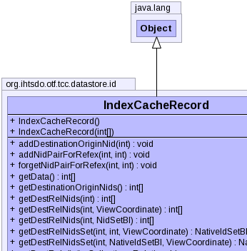
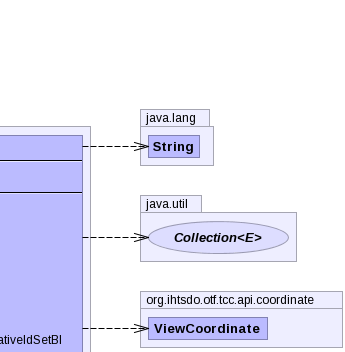
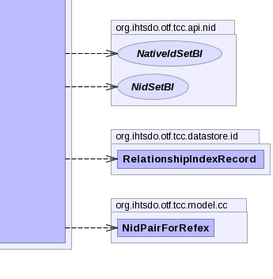

public class IndexCacheRecord extends Object
RelationshipIndexRecord for documentation of the structure of the
relationship index data.RelationshipIndexRecord|  |  |
|  |
| Constructor and Description |
|---|
IndexCacheRecord() |
IndexCacheRecord(int[] data) |
| Modifier and Type | Method and Description |
|---|---|
void |
addDestinationOriginNid(int originNid) |
void |
addNidPairForRefex(int refexNid,
int memberNid) |
void |
forgetNidPairForRefex(int refexNid,
int memberNid) |
int[] |
getData() |
int[] |
getDestinationOriginNids() |
int[] |
getDestRelNids(int cNid) |
int[] |
getDestRelNids(int cNid,
NidSetBI relTypes) |
int[] |
getDestRelNids(int cNid,
ViewCoordinate vc) |
Collection<Relationship> |
getDestRels(int cNid) |
NidPairForRefex[] |
getNidPairsForRefsets() |
int[] |
getRefexIndexArray() |
int[] |
getRelationshipOutgoingArray() |
RelationshipIndexRecord |
getRelationshipsRecord() |
boolean |
isDestinationRelOriginAlreadyThere(int originNid) |
boolean |
isRefexMemberAlreadyThere(int memberNid) |
String |
toString() |
int[] |
updateData(int[] relationshipOutgoingData,
int[] destinationOriginData,
int[] refexData) |
public IndexCacheRecord()
public IndexCacheRecord(int[] data)
public boolean isRefexMemberAlreadyThere(int memberNid)
public boolean isDestinationRelOriginAlreadyThere(int originNid)
public void addDestinationOriginNid(int originNid)
public void addNidPairForRefex(int refexNid,
int memberNid)
public void forgetNidPairForRefex(int refexNid,
int memberNid)
public int[] updateData(int[] relationshipOutgoingData,
int[] destinationOriginData,
int[] refexData)
public int[] getData()
public int[] getDestRelNids(int cNid)
throws IOException
IOExceptionpublic int[] getDestRelNids(int cNid,
NidSetBI relTypes)
throws IOException
relTypes - IOExceptionpublic int[] getDestRelNids(int cNid,
ViewCoordinate vc)
vc - public Collection<Relationship> getDestRels(int cNid) throws IOException
IOExceptionpublic int[] getDestinationOriginNids()
public NidPairForRefex[] getNidPairsForRefsets()
public int[] getRefexIndexArray()
public int[] getRelationshipOutgoingArray()
public RelationshipIndexRecord getRelationshipsRecord()
RelationshipIndexRecord backed by the data in this array.Copyright © 2013 International Health Terminology Standards Development Organisation. All rights reserved.